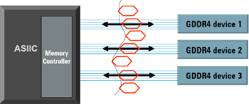
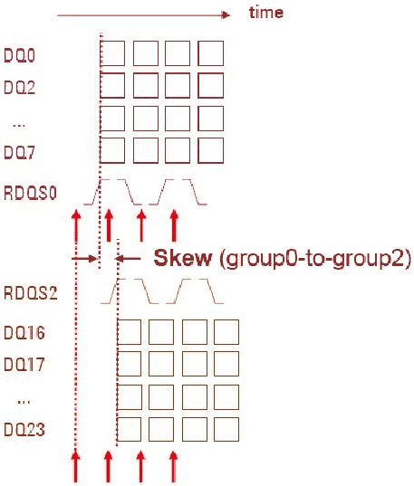
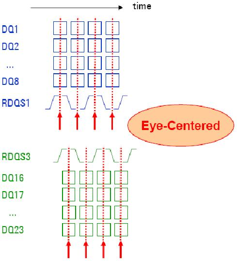

Data training concept
Memory devices present data on data lines (DQ) with skew. Data line groups (Source sync groups) have skew to each other.

Superimposing the datagrams of all pins or all pin groups will result in a diagram, that resembles an eye. Therefore it is called a data eye. If you move the compare strobe into the data eye center, you get best yield results.
Using data training test method results in:
- Skew of all data lines and the corresponding strobe clocks is known.
- Compare edges are put in the center of the data eye for each data line.
- Compare edges for strobe clocks are centered.
This improves testing yield.
Examples
Not-aligned
The figure below illustrates the timing as delivered by the DUT. Measuring the skew between group 0 and group 2 allows to position the compare edges right in the middle of the group data eye.

Aligned
The figure below illustrates the adjusted edge timings, which will be used to test a badge full of devices (for example all from one lot).

Do not confuse data training as implemented in GDDR 4 memory controllers with the DataTraining test method described here.The advantage of data training implemented in memory controllers lies in the fact that PCBs can be designed with more relaxed timing restrictions and that the need for trace length matching disappears.
The DataTraining and DataTrainingFlex test methods:
- Execute eye-centering
- Measure worst-case values of tAC and tDQSQ
- Enlarge the data eye for higher yield in production
- Optimize throughput for lowest cost-of-test
Data training removes skew to enable at-speed I/O and Core Access Test.